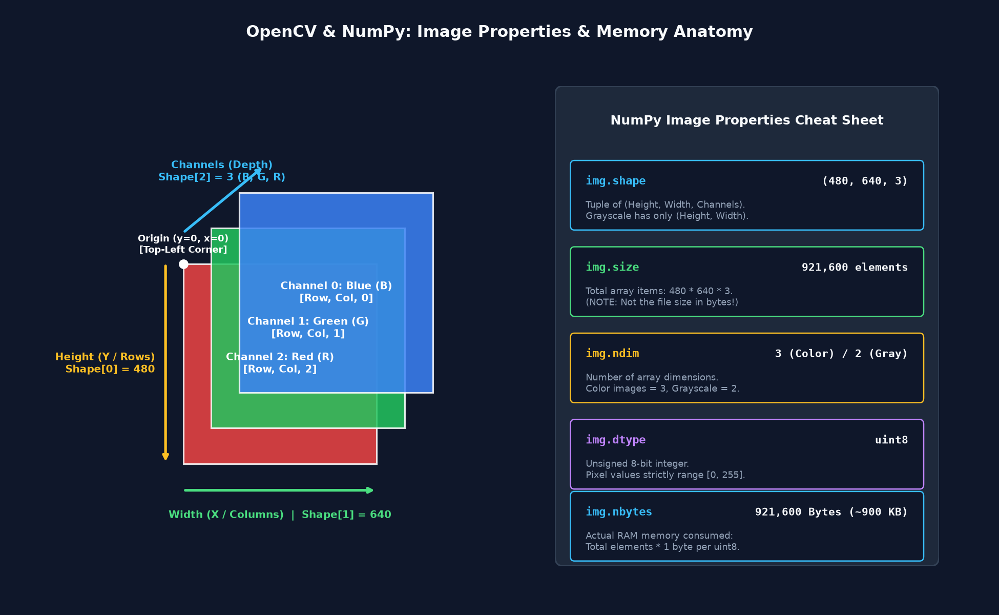
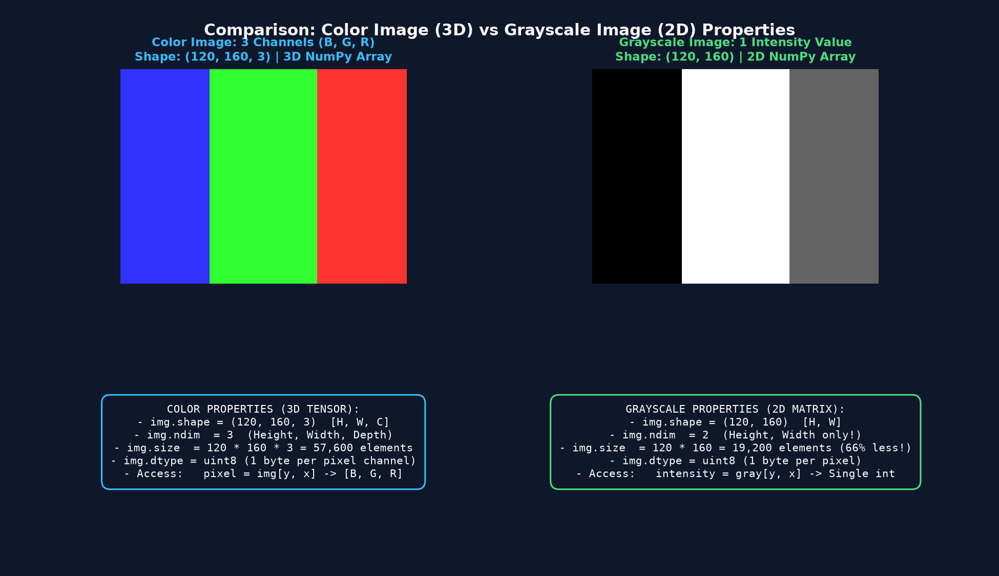
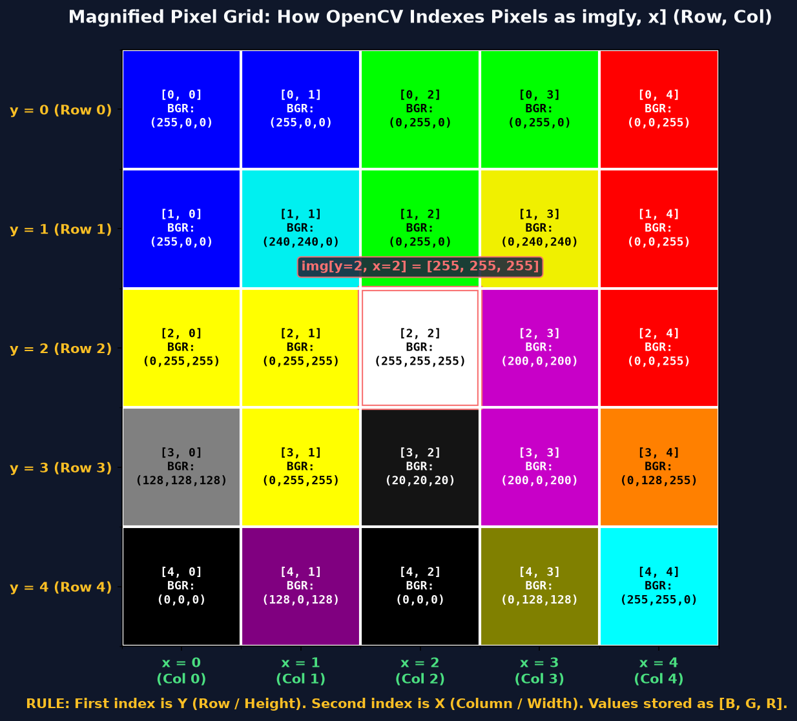
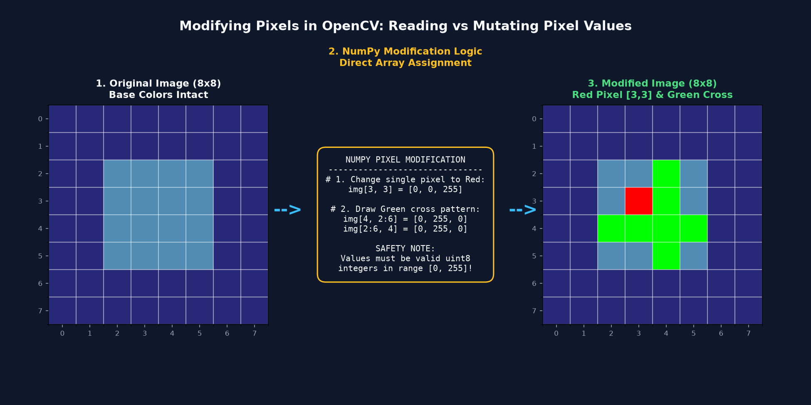
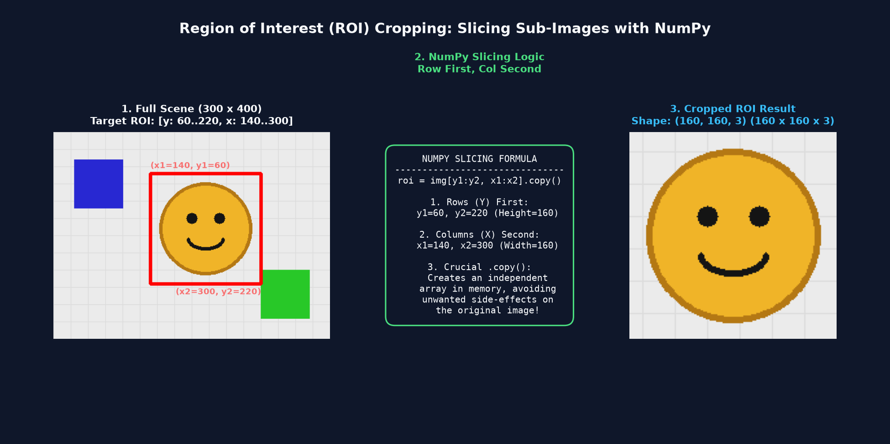

Master how OpenCV represents digital images as NumPy matrices, inspect dimensions and data types, read and modify individual pixels, and crop Regions of Interest (ROI) with safe array slicing.
Jab aap OpenCV mein koi image cv2.imread() se load karte hain, to OpenCV use kisi black-box file ke roop mein nahi, balki ek standard NumPy ndarray (N-dimensional array) ke roop mein RAM mein store karta hai.
Computer Vision pipeline mein koi bhi algorithm (jaise Face Detection, Object Tracking, ya Deep Learning) chalane se pehle image ki properties check karna sabse pehla defensive step hota hai:
| NumPy Property | Meaning / Kya Batata Hai | Example Value | Practical Significance |
|---|---|---|---|
| img.shape | Image dimensions ka tuple: (Height, Width, Channels) | (480, 640, 3) | Resolution aur channel format confirm karne ke liye |
| img.size | Array mein maujood total individual elements count | 921,600 elements | Total pixel values: 480 × 640 × 3 |
| img.ndim | Total dimensions ki sankhya (Array axes count) | 3 (Color) ya 2 (Gray) | Color vs Grayscale structure check karne ke liye |
| img.dtype | Har pixel value ka data type | uint8 | Pixel range [0, 255] confirm karta hai |
| img.nbytes | Image dwara RAM mein li gayi memory (Bytes) | 921,600 Bytes (~900 KB) | Memory budget aur buffer allocation ke liye |

OpenCV mein Color image aur Grayscale image ki internal memory structure mein bohot bada farak hota hai:

Imagine kijiye aapke bathroom ki floor ya ek bada mosaic painting jo hazaron choti-choti colored square tiles se milkar bana hai. Door se dekhne par ek smooth tasveer dikhti hai, lekin bohot paas jakar (zoom in karke) dekhne par har tile ek individual color dikhati hai.

Maths aur school geometry mein hum hamesha (x, y) likhte hain jahan x horizontal aur y vertical hota hai. Lekin NumPy array indexing mein yeh ulta ho jata hai:
Pixels access karne ke alag-alag tarike:
import cv2
img = cv2.imread("sample.jpg")
# 1. Access full BGR pixel at row y=100, column x=50
bgr_pixel = img[100, 50] # Returns NumPy array [B, G, R]
print("BGR Tuple:", bgr_pixel)
# 2. Access individual channels directly
blue_val = img[100, 50, 0] # Channel 0 = Blue
green_val = img[100, 50, 1] # Channel 1 = Green
red_val = img[100, 50, 2] # Channel 2 = Red
# 3. Access pixel in a Grayscale image
gray = cv2.cvtColor(img, cv2.COLOR_BGR2GRAY)
intensity = gray[100, 50] # Returns single integer (0-255)Kyunki OpenCV images standard NumPy arrays hoti hain, aap kisi bhi pixel ki value ko direct assignment se mutate (change) kar sakte hain:
# Change a single pixel at y=100, x=50 to pure bright Red [B=0, G=0, R=255]
img[100, 50] = [0, 0, 255]
# Change only the Blue channel of that pixel to 128
img[100, 50, 0] = 128
# Draw a small 10x10 white square patch at top-left
img[0:10, 0:10] = [255, 255, 255]
Computer Vision mein aksar humein poori 4K image process nahi karni hoti. For example, ek Security Camera frame mein humein sirf wahan dhyan dena hota hai jahan Insaan ka Chehra (Face) ya Gaadi ki Number Plate hai. Is specific rectangular zone ko Region of Interest (ROI) kehte hain.
OpenCV mein cropping ke liye koi alag se "crop()" function nahi hota — hum standard NumPy Array Slicing use karte hain:

Yeh script programmatically image create karti hai, uski saari NumPy properties audit karti hai, aur Grayscale ke saath comparison print karti hai.
import cv2
import numpy as np
# 1. Create a synthetic color image (Height=120, Width=160, Channels=3)
img_color = np.zeros((120, 160, 3), dtype=np.uint8)
img_color[:, :50] = (255, 0, 0) # Blue section
img_color[:, 50:110] = (0, 255, 0) # Green section
img_color[:, 110:] = (0, 0, 255) # Red section
# 2. Extract properties
h, w, c = img_color.shape
print("=== COLOR IMAGE PROPERTIES ===")
print(f"Shape: {img_color.shape} -> (Height={h}, Width={w}, Channels={c})")
print(f"Total Size: {img_color.size} elements ({h} * {w} * {c})")
print(f"Dimensions: {img_color.ndim} (3D Tensor)")
print(f"Data Type: {img_color.dtype}")
print(f"RAM Memory: {img_color.nbytes} bytes (~{img_color.nbytes / 1024:.2f} KB)")
# 3. Convert to Grayscale & compare
img_gray = cv2.cvtColor(img_color, cv2.COLOR_BGR2GRAY)
print("\n=== GRAYSCALE PROPERTIES ===")
print(f"Shape: {img_gray.shape} -> (Height={img_gray.shape[0]}, Width={img_gray.shape[1]})")
print(f"Total Size: {img_gray.size} elements (Exactly 1/3 of color image!)")
print(f"Dimensions: {img_gray.ndim} (2D Matrix)")Is program mein hum specific pixels read karte hain, unhe modify karke custom pattern draw karte hain, aur safe coordinate bounds checker function test karte hain.
import cv2
import numpy as np
# 1. Create an 8x8 canvas initialized to dark gray (50, 50, 50)
canvas = np.full((8, 8, 3), 50, dtype=np.uint8)
# 2. Read pixel at y=3, x=4
orig_pixel = canvas[3, 4]
print(f"Original pixel at (y=3, x=4): {orig_pixel.tolist()}")
# 3. Mutate pixel to pure bright Red [B=0, G=0, R=255]
canvas[3, 4] = [0, 0, 255]
print(f"Modified pixel at (y=3, x=4): {canvas[3, 4].tolist()} (Turned Red)")
# 4. Draw a green cross pattern
canvas[4, 2:6] = [0, 255, 0] # Horizontal bar
canvas[2:6, 4] = [0, 255, 0] # Vertical bar
# 5. Safe Pixel Getter Function (Prevents IndexError)
def get_pixel_safe(image, y, x):
h, w = image.shape[:2]
if 0 <= y < h and 0 <= x < w:
return image[y, x]
return None
print(f"Safe inside bounds (y=4, x=4): {get_pixel_safe(canvas, 4, 4).tolist()}")
print(f"Safe outside bounds (y=10, x=20): {get_pixel_safe(canvas, 10, 20)}")Is program mein hum image se target region crop karte hain aur verify karte hain ki .copy() original image ko accidental mutation se kaise bachata hai.
import cv2
import numpy as np
# 1. Create a 100x100 neutral gray image
base_img = np.full((100, 100, 3), 100, dtype=np.uint8)
# 2. Define crop coordinates: Rows y=20..80, Cols x=30..70
y1, y2 = 20, 80
x1, x2 = 30, 70
# 3. Safe Crop using .copy()
roi_crop = base_img[y1:y2, x1:x2].copy()
print(f"Original Image Shape: {base_img.shape}")
print(f"Cropped ROI Shape: {roi_crop.shape} (Height={y2-y1}, Width={x2-x1})")
# 4. Mutate the cropped ROI to bright Yellow [B=0, G=255, R=255]
roi_crop[:, :] = [0, 255, 255]
# 5. Verify that original image is still untouched gray
print(f"ROI pixel [0, 0]: {roi_crop[0, 0].tolist()} (Mutated to Yellow)")
print(f"Original image at (30, 40): {base_img[30, 40].tolist()} (Still untouched Gray!)")Coordinates bolte waqt hum (x, y) sochte hain, lekin NumPy indexing mein hamesha [y, x] (Row, Col) hota hai! Slicing mein hamesha img[y1:y2, x1:x2] likhein.
h, w, c = gray.shape likhne par crash ho jayega kyunki grayscale 2D array hai aur uske paas sirf 2 values hoti hain (h, w). Hamesha h, w = gray.shape[:2] use karein.
Bina .copy() ke crop karne par NumPy reference share karta hai. Agar aap crop par filter ya text lagayenge to original image par bhi lag jayega!
img.size total pixel elements batata hai, hard drive file size nahi. Disk par actual file size dekhne ke liye Python ka os.path.getsize("file.jpg") use karein.